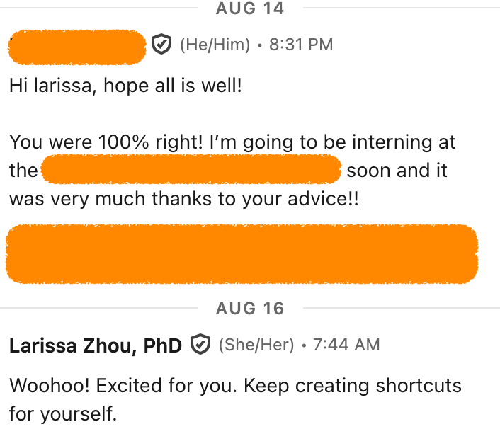

How to do cold outreaches that feel good
2026-08-24
A university student asked me for advice recently at a summer BBQ. He was interested in an org, but its website didn’t advertise any internships. He mused whether he could find their email and just write in and ask for an internship. I said, YES, DO IT.
Two weeks later, I got this message from him:

The Theoretical
This post is about cold outreaches, but it’s really about creating opportunities for yourself.
Let me explain.
Job openings are labeled doors. They say, “to enter [X field or Y org], you must enter through here.” This makes it easier for an org to hire people. But it makes it harder for you to stand out, because the labeled doors get all the traffic.
Instead, create doors for yourself. Look for any windows, any cracks, any side doors that might just turn into a door.
I promise you, very few people are doing this.
How NOT to do cold outreaches
Think about you knocking on someone’s front door. You knock, they answer, you stand there looking at each other.
Yes, I also would feel awkward in that situation.
How about the following scenario? You knock, they answer, and you say, hey I noticed you have leaves piling up in your yard. I rake leaves and take them away. Do you want some help with your leaves?
In other words, don’t do cold outreach that leaves you both unclear why you’re knocking on the door.
Instead, think of cold outreach as targeted service delivery, not a request nor a plea for favors.
How to write a cold outreach message that feels good
How to do it:
1. List the obvious doors - Start by listing the well-known orgs you already follow and admire.
2. Find the hidden alternatives - Find the smaller, less visible outfits doing similar work. Use the internet. Ask seasoned veterans of the industry. Find the email address of someone who works there.
3. Pitch yourself:
• State who you are
• Explain your interest in the org
• Present select aspects of your background that are valuable to the org
• Ask if they offer internships/jobs/contract work, depending on what's appropriate for you
• Pitch 1-3 specific ideas for how you could contribute in said role. (Why this matters)
Common objections to cold outreaches
1. “It feels too forward.” - I heard this one recently from a client. Cold outreaches feel intimidating because somebody has to bridge the gap between silence -> conversation. Striking up a conversation at the playground, at a networking event, on a shared taxi ride. I agree that it can feel a little socially scary. But just think about the rich connections that lie on the other side.
2. “It feels cringey.” I've heard this one too but have a hard time relating to it. I think it's speaking to a sense that maybe one shouldn't have to do cold outreaches if one were already well-connected, or that it's maybe a bit gauche.
3. “I don’t feel confident enough.” Is confidence a requirement for writing an email or sending a message on LinkedIn? I had a client who was feeling sort of dejected in his current position, which made him reluctant to reach out to prospective companies. I pointed out that he could either act his way into confidence, or wait to feel confident enough to act. He saw that the latter method wasn't working, since he continued to feel down, continued to not reach out, and continued to deprive himself of opps at his dream companies. He decided that confidence was not a requirement to write an email, sent out some messages that people responded to right way, and lo and behold, he's now feeling more confident.
Why pitching ideas matters
1. Clarifies what’s actually attracting you to the org. The exercise forces you to clarify what you actually want–and don’t want–to spend time on. Project yourself into day 2 of your stint there. What would you be doing that would be exciting? What would make you dread going to work? I've started writing such emails only to realize that I actually don't want to do the work, which saved me from a wild goose chase. I’ve also sat down to write such emails and couldn’t stop all the ideas that streamed into my head, and as I wrote, I got more and more enthused about what I could do there. If this happens to you, then I know that you’ve tapped into your calling. And you’re duty bound to find out if your calling is something you can do at this org.
2. Signals initiative. It demonstrates proactivity, creativity, and a willingness to own your scope from the get-go. At best, you will present a good, novel idea and the company will appreciate that you’re delivering value before you are even hired. At worst, your ideas will be wildly inapplicable, but that won’t matter. You will stand out from all the other applicants that are not proposing any ideas and who, compared to you, look like they're just sitting on their butts, waiting to be handed a job.
3. Helps them help you.Your ideas act as a jumping off point for the conversation. Especially if you are making a pivot, and your career trajectory so far doesn't make you an obvious fit for the org, it can feel like a lot of work for an org to convince themselves that you're a better option than someone with a traditional background. When you present ideas that you can actually work on, you are actively giving them ideas for how you could be useful.